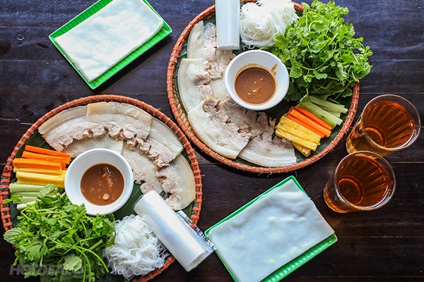

Bánh tráng cuốn thịt heo Đà Nẵng, món ăn vốn dân dã, bình dị nơi miền Trung nắng gió này ngày nay đã trở thành một trong những đặc sản hàng đầu của thành phố Đà Nẵng. Người dân Đà Nẵng đi xa nghe đến tên món ăn này đã nhớ nhà, nhớ quê không chịu nổi. Còn du khách đến Đà Nẵng mà chưa thưởng thức qua món ăn này thì chưa thể nói là đã đặt chân đến đây. Rồi khi đã thưởng thức qua một lần, không ít người đâm “nghiện” món ăn này mà lại tìm về thăm Đà Nẵng.
Cũng theo cách cuốn để ăn như các món nem miền Bắc hay gỏi cuốn miền Nam, nhưng món ăn Đà Nẵng có cái tên khá dài nói lên các nguyên liệu chính đã nức tiếng không chỉ ở Việt Nam.
Món cuốn dân dã này không cần phương thức nấu nướng cầu kỳ, chỉ là món nguội đơn giản, nhưng để có được hương vị khó quên khá khắt khe từ khâu chọn lọc nguyên liệu. Bí quyết chính của món là đĩa thịt heo, loại hai đầu da được chọn từ phần ngon nhất của con heo. Muốn chọn được thịt ngon như vậy, phải chọn heo nặng từ 50 – 70 kg và lấy khoảng 5 kg thịt mông. Thịt heo này được hấp để giữ vị thơm ngon, ngọt sắc đậm của thịt, khi miếng thịt cắt ra có mỡ trong là đạt tiêu chuẩn. Rau ăn kèm không cầu kỳ, khó kiếm nhưng cái khó là chọn được rau tươi và non để khi ăn kèm với thịt heo vẫn giữ nguyên được hương vị. Với từng cuốn bánh, thực khách có thể cảm nhận được sự tươi mát của xà lách, vị thơm nồng của rau quế, rau thơm, diếp cá, vị chát nhẹ của chuối trái xắt lát mỏng cùng với vị là lạ của tía tô…. Rồi có thêm ít giá trắng, thơm cắt sợi, dưa chuột, cà rốt, chuối xanh xắt miếng dài để dễ cuốn. Bánh tráng dùng để cuốn cũng phải được chọn kỹ, thường là loại bánh tráng phơi sương dẻo thơm mùi gạo, có độ dày vừa phải, khi cắn vào rất mềm nhưng dai nên không bị rách, và khi cuốn không bị bể nát. Công thêm vào có đĩa bánh ướt kế bên, lót một lớp bánh ướt lên bánh tráng rồi mới cuốn, càng ngon, càng tuyệt.
Thức chấm “chuẩn” nhất cho món bánh tráng cuốn thịt heo, không thể thay thế bằng nước chấm khác được. Nếu như thịt heo hay rau sống không có sự khác biệt nhiều với các món bánh tráng cuốn thịt heo ở các tỉnh lân cận thì điều làm nên dấu ấn riêng của món ăn chính là mắm nêm ấy. Mỗi quán hàng ở Đà Nẵng có bí kíp riêng để pha mắm chấm từ mắm nêm nguyên chất tạo nên vị đặc biệt, gây ấn tượng cho người thưởng thức. Cùng với đó quy trình làm nên mắm nêm phải thực sự đảm bảo vệ sinh an toàn thực phẩm, tạo sự tin tưởng với những người còn e dè với các loại mắm.
Thưởng thức món đặc sản Đà Nẵng, bạn không nên vội vàng, phải sắp xếp và cuốn sao cho miếng vừa đủ, tròn và chắc, hòa trộn được hương vị của các nguyên liệu. Trải chiếc bánh tráng ra, xếp vào đó một lát bánh phở, một miếng thịt heo, lát dưa chuột, chuối xanh, giá đỗ và các loại rau tươi: xà lách, tía tô, húng, diếp cá… rồi từ từ cuốn lại và chấm vào bát mắm nêm cay nồng. Để rồi khi cắn vào chiếc bánh, cái dai dai của bánh tráng lề, vị mềm mại của miếng mì ướt thêm chút ngọt sắc của thịt, vị tươi mát của rau, cay nồng của mắm nêm đã khiến bao người đến và lưu luyến Đà Nẵng sau khi thưởng thức đặc sản bánh tráng cuốn thịt heo trứ danh. Nếu có dịp đến thành phố Đà Nẵng xinh đẹp, đừng bỏ lỡ cơ hội thưởng thức món ăn đậm đà này cho những cuộc hành trình của mình nhé
Địa chỉ quán ăn
Quán Mậu: 35 Đỗ Thúc Tịnh, Khuê Trung - Hotline: 0511.3846615
Quán Bà Hường:
Chi nhánh 1: 364 đường 2/9 - Hotline: 0511.3611629
Chi nhánh 2: Kiệt 35 Hàm Nghi - Hotline: 0511.2248466